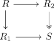
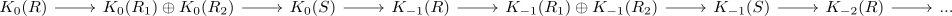

mayer vietoris of negative k-theory
Proposition
Let

be a milnor square of rings.
Then there exists a long exact sequence

compatible with the mayer vietoris of k-theory for 0 and 1o
Let

be a milnor square of rings.
Then there exists a long exact sequence

compatible with the mayer vietoris of k-theory for 0 and 1o